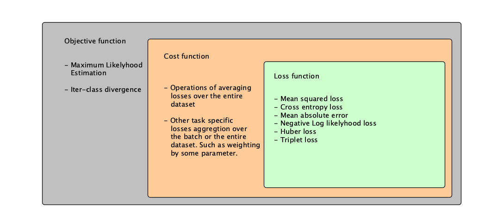

People used to talk about loss functions and how to optimize them and are concerned about their stability and relevance for a task. But living in an era of ML we must know that datasets containing thousands of examples needed to be aggregated somehow. Some tasks specific losses might help us to provide the knowledge about the domain to the model more efficiently, and discussing these ideas with our colleagues we must utilize the exact terms to be clear.
To be honest, I used to hear the terms "Loss function" and "Objective function" in the same context simultaneously. It always carried ambiguousness to the meaning of what the author is trying to explain. Once I met a problem that required defining a specific function to optimize to be more relevant to the business task. At that time I was working on NER (Named Entity Recognition) task trying to build a deep learning model for the token classification.
I think that a clear understanding of the problem and string following correct terms while explanations should be established in any team because It will allow us to interact effectively and speak the same language. Shortly speaking this post is about how I define loss, cost, and objective function, so if you have some other opinions you want to share with me and/or discuss, please contact me directly in any possible way (you can find links on the main page).
Definitions change during the discipline change, which means people create new abstractions and introduce new terms during the subject's evolution to make things easier to understand for the people who don't know something yet easier to explain to the others. In physics and math, we used to solve some optimization problems, for example optimize energy consumption and the semiconductor surface area, while building more effective and cheaper techs.
In practice, we define the model, loss function, and an optimization method for training. In our case - the model is the function itself, which means when we used just logistic regression, we use a linear model, also we can call it linear function, or when we used deep learning models this function became non-linear which helps to fit data better, but we don't know how this function looks in reality and this is the main problem. It can be resolved when you have relevant data for your task which can be used as anchor points for function values. In other words, while developing DL model we usually define the function itself, we assume that this function describes the nature which is inside the data we use.
For optimal parameters search, we need two things - the tools to evaluate how far our model is from the ground truth and the method which changes this model towards the optimal state. The functions that evaluate some mathematician model correctness were called the "Loss Functions" and methods for optimization "Optimizers"
As we already said - for model optimization we use loss functions and optimizers. Talking about loss functions, we have to understand that we use the term "loss". This component is required by optimizers, but what loss do we use while training, every loss from every example, or somehow aggregated loss from all the examples in the dataset? This question is the main point of this post.
We define 3 types of functions.

Loss function - is the function that calculates the difference between the predicted value and the real value. It shows the pointwise difference between the currently obtained by the model function and the function we are trying to learn using the data.
Cost function - is the function that calculates the global model error. It aggregates the model prediction and shows the current model state. This function might be the mean of all the loss function values, their median or maximum/minimumm.
Objective function - is the domain of functions we use for model loss calculation/model correctness evaluation. For example, MLE (Minimum Likelyhood Estimation) or KL (Kullback–Leibler) divergence is an objective function, but it's not concrete functions itself.
Choosing the most appropriate loss also is a part of hyperparameter optimization. As we already said, it's important to understand the difference between different model components. In addition, I would say that understanding the search field helps to find a successful decision faster. Multiple problems that have significant class imbalance or outliers. In this case, taking the mean of losses aggregation might be essential. Your model just can converge to the most frequent class or be extremely biased about what don't really what we want.
- Focal loss, is a vivid example. It increases the loss for the hard to predict examples. Closer binary classification to 0.5 then higher loss value. Focal loss belongs to the loss functions. (Gamma is a focusing parameter) $${\displaystyle FL\left(p_t\right)=-(1-p_t)^\gamma log(p_t),\ \gamma \geq 0}$$
- Pairwise metrics belong to loss functions such as euclidean distance, cosine distance, Minkowski distance, etc. In order to create a cost function, developers write an aggregation function, for example averaging losses. $${Euclidean\ distance: d(p, q) = \sqrt{\sum_{i=1}^{n}(q_i - p_i)^2}}$$ This post about metrics space might be interesting.
- The vidid and interesting example might be using the Dice Loss for the NER problem. Using this type of loss helps to avoid class imbalance problems. Dice loss belongs to the cost functions. $${DL = \frac{2 * y_{hat}\cap y}{y_{hat} + y},\ y, y_{hat} \in \mathbb{N}}$$ -